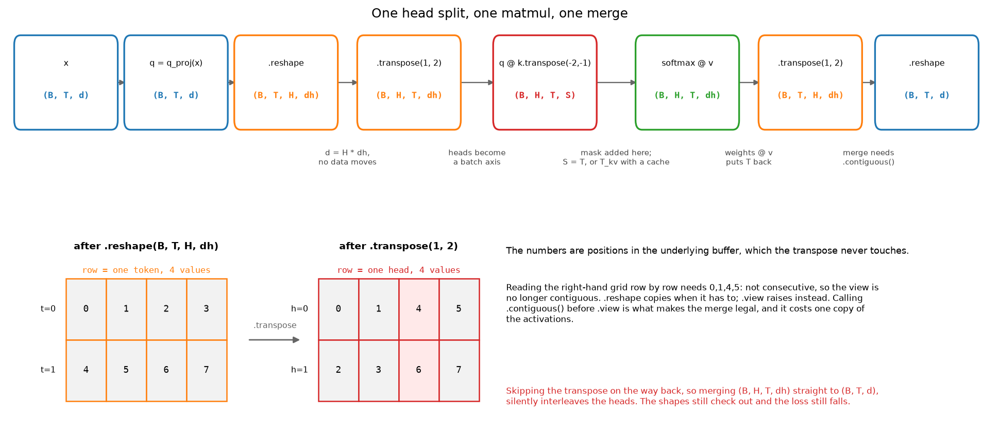

NumPy ↔ PyTorch cheat sheet¶
Why this matters at staff level. In a coding round you are typing in one of these two APIs while someone watches. Stalling for eight seconds on whether it is
keepdimsorkeepdim, or reaching forviewon a transposed tensor and having to recover from the exception, costs more signal than it should. Fluency here is cheap to buy and expensive to fake.
TL;DR: the interview card¶
- NumPy defaults to float64, PyTorch to float32. A NumPy reference and a Torch implementation will disagree at about 1e-7 for that reason alone.
torch.tensor(x)copies.torch.as_tensor(x)andtorch.from_numpy(x)share memory with the NumPy array, so a later in-place write is visible in both.keepdimsin NumPy,keepdimin PyTorch. Getting it wrong turns a broadcast into a silently wrong shape.viewrequires a contiguous tensor and raises otherwise.reshapecopies when it has to. Aftertranspose, usereshapeor call.contiguous()first.numpy.repeatrepeats elements,numpy.tiletiles the array.Tensor.repeatistile;torch.repeat_interleaveisrepeat. The names are crossed.expandandbroadcast_toallocate nothing and only work on size-1 axes.repeatandtileallocate.np.take_along_axisistorch.gather. NumPy broadcasts the index array, Torch does not, and Torch wants int64.a[idx] += vdoes not accumulate duplicate indices in either library. Usenp.add.atorTensor.index_add_.F.padtakes its padding last axis first, in pairs.np.padtakes it first axis first, as tuples.- Subtract the max before every exponential. Use
log_softmaxplusnll_loss, orcross_entropyon raw logits, neverlog(softmax(x)).
1. The five defaults that bite¶
Before any table, five behaviours that cause most cross-library bugs.
Dtype. np.zeros(3) is float64. torch.zeros(3) is float32. When you write a
NumPy reference for a Torch module, the comparison tolerance has to be about 1e-6
absolute, and torch.testing.assert_close already defaults to that for float32.
Casting the NumPy side with astype(np.float32) makes the comparison honest.
Copy semantics. torch.tensor(arr) always copies and warns if you hand it a
tensor. torch.as_tensor(arr) and torch.from_numpy(arr) alias the same buffer
when the dtype and device allow it. Going back, t.numpy() also aliases, which is
why it refuses on a tensor that requires grad or lives on a GPU.
Integer division. a / b on integer tensors gives float in both libraries.
Floor division is // in both, and torch.div(a, b, rounding_mode="floor") is the
explicit form. Negative numerators round toward negative infinity in both, so
-7 // 2 == -4, which bites when you compute grid indices from coordinates that
can go negative.
Axis keyword. NumPy reductions take axis and default it to None, meaning
"flatten everything". PyTorch takes dim and most reductions require it if you do
not want a full reduction. np.cumsum(a) on a 2-D array silently flattens;
torch.cumsum makes you say the dim.
Views. Both libraries hand out views freely. NumPy's basic slicing is a view,
fancy indexing is a copy. Torch is the same. A write through a view is visible
through the original, and a great many "my gradient is wrong" bugs are a write
through a view inside a no_grad block.
2. Creation¶
| Task | NumPy | PyTorch | Gotcha |
|---|---|---|---|
| Zeros, ones | np.zeros((2,3)) |
torch.zeros(2, 3) |
Torch takes varargs or a tuple; NumPy needs the tuple. |
| Same shape as | np.zeros_like(a) |
torch.zeros_like(t) |
_like also copies dtype and device, which is the point of using it. |
| Range | np.arange(5) |
torch.arange(5) |
torch.arange(5.0) gives float32; torch.arange(5) gives int64. |
| Linear spacing | np.linspace(0, 1, 11) |
torch.linspace(0, 1, 11) |
Both include the endpoint. |
| Identity | np.eye(4) |
torch.eye(4) |
|
| From a list | np.array([1, 2]) |
torch.tensor([1, 2]) |
Both infer int64 from Python ints. |
| From a NumPy array | torch.from_numpy(a) |
Shares memory. Read-only NumPy arrays raise. | |
| Uninitialised | np.empty((2,3)) |
torch.empty(2, 3) |
Contains whatever was in the page. Only for buffers you fill immediately. |
| Full | np.full((2,3), 7.0) |
torch.full((2,3), 7.0) |
Torch infers the dtype from the fill value. |
| Triangular mask | np.tril(np.ones((T,T))) |
torch.tril(torch.ones(T, T)) |
Build it as bool, not float, so the mask logic stays boolean. |
3. dtype and device¶
| Task | NumPy | PyTorch | Gotcha |
|---|---|---|---|
| Cast | a.astype(np.float32) |
t.float() or t.to(torch.float32) |
t.float() is float32, not "whatever float". |
| Check | a.dtype |
t.dtype |
np.float32 and torch.float32 are different objects. |
| Move to GPU | t.to("cuda") or t.cuda() |
.to() is a no-op when already there, so it is safe to call twice. |
|
| Back to NumPy | t.detach().cpu().numpy() |
All three calls are load-bearing. Skipping detach raises. |
|
| Smallest value | np.finfo(np.float16).min |
torch.finfo(torch.float16).min |
Use this for mask values, not a hard-coded -1e9. |
| Promote | np.result_type(a, b) |
torch.promote_types(x, y) |
Torch will not promote int64 and float32 the way NumPy does in every case. |
The mask-value row is worth dwelling on. -1e9 in float16 overflows to -inf, and
a row of all -inf gives NaN out of softmax. torch.finfo(scores.dtype).min
picks the right constant for whatever precision the model is running in, which is
the one line that makes a from-scratch attention block survive a switch to mixed
precision.
4. Indexing¶
| Task | NumPy | PyTorch | Gotcha |
|---|---|---|---|
| Basic slice | a[1:3, :, ::2] |
t[1:3, :, ::2] |
Both are views. Negative steps work in NumPy and raise in Torch. |
| Ellipsis | a[..., 0] |
t[..., 0] |
The safest way to index the last axis of an unknown rank. |
| New axis | a[:, None] |
t[:, None] |
None and np.newaxis are the same object. Torch also has unsqueeze(1). |
| Integer array | a[[0, 2, 2]] |
t[[0, 2, 2]] |
Copy, not a view, in both. Duplicates are allowed. |
| Two index arrays | a[rows, cols] |
t[rows, cols] |
Both broadcast the index arrays against each other, then the result has the broadcast shape. |
| Boolean mask | a[a > 0] |
t[t > 0] |
Flattens to 1-D. The output shape is data-dependent, so it is not traceable. |
| Where a mask is true | np.nonzero(m) |
torch.nonzero(m, as_tuple=True) |
Torch defaults to a single (n, ndim) tensor; the tuple form matches NumPy. |
| Assign through a mask | a[m] = 0 |
t[t > 0] = 0 |
In-place, so it breaks autograd on a leaf tensor. torch.where is the functional form. |
| Pick one column per row | a[np.arange(B), idx] |
t[torch.arange(B), idx] |
The canonical "gather one element per row" idiom. Both index arrays must be the same length. |
The row that comes up in every second interview is the last one. Given logits
of shape (B, V) and targets of shape (B,), the log-probability of each
target is log_probs[torch.arange(B), targets]. Writing log_probs[:, targets]
instead gives (B, B) and the mistake survives until the loss looks odd.
5. gather, scatter and take_along_axis¶
These four are one idea: move data around using an index tensor of the same rank.
| Task | NumPy | PyTorch | Gotcha |
|---|---|---|---|
| Gather along an axis | np.take_along_axis(a, idx, axis=-1) |
torch.gather(t, -1, idx) |
NumPy broadcasts idx against a; Torch requires every non-gathered dim to match exactly, and idx must be int64. |
| Gather whole slices | np.take(a, idx, axis=0) |
torch.index_select(t, 0, idx) |
index_select needs a 1-D index; a[idx] is the shorter form of the same thing. |
| Write along an axis | np.put_along_axis(a, idx, v, axis=-1) |
t.scatter_(-1, idx, v) |
Both overwrite. Duplicate indices leave whichever write lands last. |
| Accumulate at indices | np.add.at(a, idx, v) |
t.index_add_(0, idx, v) or t.scatter_add_(dim, idx, v) |
a[idx] += v does not accumulate duplicates in either library. It reads, adds, writes once. |
The accumulate row is the classic silent bug. Building a histogram with
counts[labels] += 1 undercounts every repeated label, and the result looks
plausible. np.add.at and index_add_ are the unbuffered versions that do the
right thing, and they are slower for exactly that reason.
Two shapes worth memorising, because both appear in the canon:
# Per-token log-probability of the realised token. Canon #31, #54, #55.
logp = F.log_softmax(logits, dim=-1) # (B, T, V)
token_logp = logp.gather(-1, ids[:, :, None])[:, :, 0] # (B, T)
# Top-k expert routing. Canon #37.
scores = router(x) # (B, T, E)
top_val, top_idx = scores.topk(k, dim=-1) # (B, T, k) each
gate = torch.softmax(top_val, dim=-1) # (B, T, k)
In the first, the [:, :, None] makes the index the same rank as the source, and
the trailing [:, :, 0] removes the axis gather kept. Both steps are mandatory,
and forgetting the second gives (B, T, 1) that then broadcasts wrongly into the
loss.
6. Reductions¶
| Task | NumPy | PyTorch | Gotcha |
|---|---|---|---|
| Sum over an axis | a.sum(axis=1) |
t.sum(dim=1) |
axis works in Torch too as an alias; dim does not work in NumPy. |
| Keep the axis | a.sum(axis=1, keepdims=True) |
t.sum(dim=1, keepdim=True) |
Singular in Torch, plural in NumPy. |
| Mean of a bool | m.mean() |
m.float().mean() |
Torch refuses to take the mean of a bool tensor. NumPy promotes silently. |
| Several axes | a.sum(axis=(1, 2)) |
t.sum(dim=(1, 2)) |
Both accept tuples. |
| Variance | a.var(axis=0, ddof=0) |
t.var(dim=0, unbiased=False) |
NumPy defaults to the biased estimator, Torch to the unbiased one. This is the single most common normalization-test mismatch. |
| Norm | np.linalg.norm(a, axis=-1) |
t.norm(dim=-1) or torch.linalg.norm |
torch.norm is deprecated in favour of torch.linalg.*. |
| Any / all | m.any(axis=0) |
m.any(dim=0) |
|
| Count true | m.sum() |
m.sum() |
Both give an integer type. |
| Masked mean | (x * m).sum() / m.sum() |
same | There is no nanmean that knows about your padding. Write the two-line form and keep the denominator visible. |
The variance row costs people a test. torch.nn.LayerNorm normalises with the
biased variance (unbiased=False), so a NumPy reference written with the default
ddof=0 matches and one written with ddof=1 does not, by a factor of n/(n-1).
On a width of 4 that is a 15% difference and the test fails loudly. On a width of
512 it is 0.2% and the test fails only under a tight tolerance, which is worse.
7. argmax, topk and sort¶
| Task | NumPy | PyTorch | Gotcha |
|---|---|---|---|
| Argmax | a.argmax(axis=-1) |
t.argmax(dim=-1) |
Ties go to the first index in NumPy; Torch does not guarantee which. |
| Max value and index | a.max(-1), a.argmax(-1) |
t.max(dim=-1) returns both |
Torch's max with a dim returns a named tuple (values, indices); without a dim it returns a scalar. |
| Top k | np.argpartition(a, -k)[-k:] |
t.topk(k, dim=-1) |
argpartition does not sort the k it selects. topk returns them sorted unless you pass sorted=False. |
| Sort | np.sort(a, axis=-1) |
torch.sort(t, dim=-1) |
Torch returns (values, indices); NumPy has a separate argsort. |
| Descending | np.sort(a)[::-1] |
torch.sort(t, descending=True) |
The NumPy negative-step trick produces a non-contiguous view that Torch will not accept via from_numpy. |
| Rank of each element | np.argsort(np.argsort(a)) |
same with torch.argsort |
Double argsort is the rank. It comes up in ranking metrics (canon #59). |
NMS (canon #19) is built on argsort descending plus a boolean keep mask, and
top-p sampling (canon #32) is built on sort descending plus cumsum plus a
threshold. Both are three lines once the sort is right.
8. Joining and splitting¶
| Task | NumPy | PyTorch | Gotcha |
|---|---|---|---|
| Join on an existing axis | np.concatenate([a, b], axis=0) |
torch.cat([a, b], dim=0) |
Torch also spells it concat and concatenate. torch.stack is the other one. |
| Join on a new axis | np.stack([a, b], axis=0) |
torch.stack([a, b], dim=0) |
stack adds an axis, cat does not. Mixing them up is the most common shape error in a batching helper. |
| Split into n pieces | np.split(a, 3, axis=0) |
torch.chunk(t, 3, dim=0) |
np.split raises on an uneven division; np.array_split allows it; torch.chunk allows it and makes the last piece short. |
| Split by size | np.split(a, [2, 5]) |
torch.split(t, 2, dim=0) |
NumPy takes cut positions, Torch takes chunk sizes. They look the same and mean opposite things. |
| Repeat a batch | np.repeat(a, n, axis=0) |
t.repeat_interleave(n, dim=0) |
Both give [a0, a0, a1, a1] for n=2. |
| Tile a batch | np.tile(a, (n, 1)) |
t.repeat(n, 1) |
Both give [a0, a1, a0, a1]. |
The repeat/tile confusion deserves its own line because the naming is genuinely
crossed between the libraries: numpy.repeat repeats each element, and the
PyTorch method with that name, Tensor.repeat, tiles the whole tensor. When you
sample a group of G responses per prompt (canon #56), prompt-major order comes
from repeat_interleave, and getting repeat instead silently pairs every reward
with the wrong prompt while every shape stays valid.
9. reshape, view, permute, transpose, movedim¶
| Task | NumPy | PyTorch | Gotcha |
|---|---|---|---|
| Change shape | a.reshape(B, -1) |
t.reshape(B, -1) |
Copies when the tensor is not contiguous; otherwise a view. |
| Change shape, no copy allowed | t.view(B, -1) |
Raises on a non-contiguous tensor. Use it when you want that error. | |
| Swap two axes | a.swapaxes(1, 2) |
t.transpose(1, 2) |
NumPy's transpose with no args reverses all axes; Torch's needs exactly two. |
| Permute all axes | a.transpose(0, 2, 1, 3) |
t.permute(0, 2, 1, 3) |
Same semantics, different name. |
| Move one axis | np.moveaxis(a, 1, -1) |
t.movedim(1, -1) |
The clearest of the four when you only need one axis moved. |
The .T attribute |
a.T reverses every axis |
t.T is for 2-D; t.mT for the last two |
a.T on (B, T, d) gives (d, T, B), which is almost never what you meant. |
| Drop or add a size-1 axis | a.squeeze(1), a[:, None] |
t.squeeze(1), t.unsqueeze(1) |
Always pass the axis to squeeze. The no-argument form removes every size-1 axis, so a batch of 1 loses its batch dim. |
| Flatten a range | a.reshape(B, -1) |
t.flatten(1, 2) |
flatten(start, end) is the readable version of merging exactly two axes. |
| Make it contiguous | np.ascontiguousarray(a) |
t.contiguous() |
One copy. Check with t.is_contiguous(). |

The bottom panel is the whole contiguity story in one picture. transpose changes
the strides and not the buffer, so reading the transposed tensor in row-major order
would need elements 0, 1, 4, 5, which are not consecutive. view refuses.
reshape notices and copies. contiguous() does the copy explicitly so the
following view succeeds, and that copy is a real cost in an attention block: one
full pass over the activations, per layer, per step.
The five-line head split, which you should be able to type without pausing:
B, T, d = x.shape # (B, T, d)
q = self.q_proj(x) # (B, T, d)
q = q.reshape(B, T, self.n_heads, self.d_head) # (B, T, H, dh)
q = q.transpose(1, 2) # (B, H, T, dh)
# ... attention ...
out = ctx.transpose(1, 2).reshape(B, T, d) # (B, T, d)
The merge on the last line is reshape, not view, precisely because the
transpose in front of it left a non-contiguous tensor.
10. expand, repeat, tile, broadcast_to¶
| Task | NumPy | PyTorch | Allocates? |
|---|---|---|---|
| Broadcast a size-1 axis | np.broadcast_to(a, (B, T, d)) |
t.expand(B, T, d) |
No. Stride 0 on the expanded axes. |
Broadcast with -1 |
t.expand(-1, T, -1) |
No. -1 means "leave this axis alone". |
|
| Materialise copies | np.repeat(a, n, axis) / np.tile(a, reps) |
t.repeat_interleave / t.repeat |
Yes. |
| Broadcast two arrays | np.broadcast_arrays(a, b) |
torch.broadcast_tensors(a, b) |
No. |
| Check the result shape | np.broadcast_shapes(s1, s2) |
torch.broadcast_shapes(s1, s2) |
No. Useful in a test. |
expand only works on axes of size 1. It returns a view whose stride on those axes
is zero, so every "copy" is the same memory. Writing into an expanded tensor writes
to all of them at once, which is why expand(...).contiguous() appears before any
in-place op. When memory is the constraint (a (B, H, T, T) mask, say), expanding
a (1, 1, T, T) mask costs nothing and repeating it costs B * H times as much.
11. matmul, einsum, tensordot, bmm¶
| Task | NumPy | PyTorch | Gotcha |
|---|---|---|---|
| Matrix product | a @ b |
x @ y |
Both broadcast the leading batch axes. |
| Batched, exactly 3-D | a @ b |
torch.bmm(x, y) |
bmm refuses to broadcast and refuses anything other than 3-D. matmul does both. |
| Vector dot | np.dot(u, v) |
torch.dot(u, v) |
torch.dot is 1-D only; np.dot is overloaded on rank and does four different things. |
| Outer product | np.outer(u, v) |
torch.outer(u, v) |
Or u[:, None] * v[None, :], which generalises. |
| Contract chosen axes | np.tensordot(a, b, axes=([2], [1])) |
torch.tensordot(a, b, dims=([2], [1])) |
The keyword differs. Useful when neither operand is shaped like a matrix. |
| Named contraction | np.einsum("bthd,bshd->bhts", q, k) |
torch.einsum("bthd,bshd->bhts", q, k) |
Identical strings. Torch's is slower than a plain matmul for the common cases. |
STYLE.md asks for an explained string whenever einsum appears, so here is the
attention one term by term. "bthd,bshd->bhts": b batch, t query position,
s key position, h head, d head dimension. d appears in both inputs and not
in the output, so it is summed over. b and h appear in both inputs and in the
output, so they are batched. t comes from the first operand and s from the
second, so the output is the full query-by-key score matrix per head.
In an interview, write the explicit transpose and @ version. It is what the
reference implementations in this book do, it is what the interviewer can read at a
glance, and einsum buys nothing when the contraction is a plain matmul. Keep
einsum for the cases where the alternative is three reshapes, such as a
tensor-parallel linear or a bilinear interaction layer.
12. Padding, one-hot, where, clip, cumsum, unique¶
| Task | NumPy | PyTorch | Gotcha |
|---|---|---|---|
| Pad | np.pad(a, ((0,0), (1,1)), constant_values=0) |
F.pad(t, (1, 1, 0, 0)) |
NumPy takes a pair per axis, first axis first. Torch takes a flat list, last axis first. F.pad(t, (1, 1)) pads only the last axis. |
| One-hot | np.eye(K)[labels] |
F.one_hot(labels, K) |
Torch returns int64; cast before using it in a float loss. |
| Select | np.where(m, a, b) |
torch.where(m, a, b) |
Broadcasts all three. The functional alternative to masked assignment, so it survives autograd. |
| Clip | np.clip(a, lo, hi) |
torch.clamp(t, min=lo, max=hi) |
Gradient is zero outside the range in both. PPO's clip relies on that. |
| Cumulative sum | np.cumsum(a, axis=-1) |
torch.cumsum(t, dim=-1) |
NumPy's axis defaults to None and flattens. Always pass it. |
| Cumulative max | np.maximum.accumulate(a, axis) |
torch.cummax(t, dim) |
Torch returns (values, indices). |
| Unique | np.unique(a, return_counts=True) |
torch.unique(t, return_counts=True) |
Both sort by default. torch.unique_consecutive does not sort and is what you want for run-length work. |
| Bincount | np.bincount(labels, minlength=K) |
torch.bincount(labels, minlength=K) |
int64 input only, and the output length is max(labels) + 1 unless you pass minlength. |
| Searchsorted | np.searchsorted(bins, v) |
torch.searchsorted(bins, v) |
The fast path for bucketing depth into bins (lift-splat) and for top-p sampling. |
The padding row causes real incidents. To pad a (B, C, H, W) image by one pixel
on every spatial side, NumPy wants np.pad(a, ((0,0), (0,0), (1,1), (1,1))) and
Torch wants F.pad(t, (1, 1, 1, 1)). To pad only the height, Torch wants
F.pad(t, (0, 0, 1, 1)), with the leading zero pair for the width that comes
after it in the tensor and first in the argument list.
13. Randomness and seeds¶
| Task | NumPy | PyTorch | Gotcha |
|---|---|---|---|
| Seed | rng = np.random.default_rng(0) |
torch.manual_seed(0) |
The NumPy legacy np.random.seed(0) is global state; default_rng is the modern, local form. |
| Local generator | rng.normal(size=(2, 3)) |
g = torch.Generator().manual_seed(0) |
Torch ops take generator=g. A local generator is what makes a test reproducible without touching global state. |
| Normal | rng.standard_normal((2, 3)) |
torch.randn(2, 3) |
|
| Uniform | rng.random((2, 3)) |
torch.rand(2, 3) |
|
| Integers | rng.integers(0, 10, size=5) |
torch.randint(0, 10, (5,)) |
NumPy's high is exclusive; so is Torch's. |
| Choice without replacement | rng.choice(n, k, replace=False) |
torch.randperm(n)[:k] |
Torch has no direct choice. |
| Categorical sample | rng.choice(V, p=probs) |
torch.multinomial(probs, 1) |
multinomial takes probabilities, not logits, and normalises rows for you. |
| Shuffle | rng.permutation(n) |
torch.randperm(n) |
Seeding both libraries in a test does not make a NumPy reference and a Torch implementation produce the same random numbers. They are different generators. When a test needs identical inputs on both sides, generate once in NumPy and convert.
14. In-place operations¶
| Task | NumPy | PyTorch | Gotcha |
|---|---|---|---|
| In-place add | a += b |
t += b or t.add_(b) |
Torch's trailing underscore marks every in-place method. |
| In-place clamp | np.clip(a, lo, hi, out=a) |
t.clamp_(lo, hi) |
|
| Fill under a mask | a[m] = 0 |
t.masked_fill_(m, 0) |
The functional masked_fill returns a new tensor and keeps autograd happy. |
| Zero | a[:] = 0 |
t.zero_() |
|
| Copy into | a[:] = b |
t.copy_(b) |
copy_ broadcasts and casts; plain assignment in Torch does not cast. |
An in-place op on a tensor that autograd needs for the backward pass raises
RuntimeError: one of the variables needed for gradient computation has been
modified by an inplace operation. The usual culprits are x += residual instead
of x = x + residual, and a relu_() on an activation the next layer's backward
needs. In a from-scratch block, prefer the out-of-place form everywhere and only
reach for in-place when you have measured the memory.
15. The autograd column, which has no NumPy entry¶
| What it does | Call | When you need it |
|---|---|---|
| Track gradients | t.requires_grad_(True) |
Only on leaves. Intermediate tensors inherit it. |
| Compute gradients | loss.backward() |
Accumulates into .grad. Call opt.zero_grad(set_to_none=True) first, every step. |
| Gradients without a graph walk | torch.autograd.grad(loss, params) |
Returns them instead of accumulating. What you want inside a meta-gradient or a penalty term. |
| Stop the graph | x.detach() |
The reference policy's log-probabilities in DPO, the target network's Q values in DQN. |
| Stop the graph for a block | with torch.no_grad(): |
Evaluation, and the sampling half of any RL loop. |
| Inference-only | with torch.inference_mode(): |
Stricter and faster than no_grad; the tensors it produces cannot later be used in autograd. |
| Keep a non-leaf gradient | h.retain_grad() |
Debugging which layer's gradient exploded. |
| Inspect a gradient mid-graph | h.register_hook(print) |
The cheapest way to find where a NaN first appears. |
| Numeric gradient check | torch.autograd.gradcheck(f, inputs) |
Needs float64 inputs. This is how the canon's hand-written backwards are tested. |
| Clip gradients | torch.nn.utils.clip_grad_norm_(params, 1.0) |
Returns the pre-clip norm, which is worth logging. |
| Scalar out | loss.item() |
Forces a sync on GPU. Do it once per step, not per tensor. |
gradcheck deserves a mention beyond the table. It compares your analytic backward
against central differences and it is the fastest way to be sure a hand-written
backward is right, which is what canon items #11, #13 and #14 are about. It needs
float64 and requires_grad=True inputs, and it is slow enough that you run it on
a (3, 4) input and not a real batch.
16. Numerically stable patterns¶
Four patterns cover almost every stability question an interviewer asks.
Log-sum-exp¶
Exponentiating a logit of 800 overflows float32 at around 88. Subtract the max first; it cancels exactly.
Torch ships torch.logsumexp; write the three-line version when asked, then say
you would call the built-in in production because it fuses the pass.
Softmax and log-softmax¶
log_softmax is not log(softmax(x)). Going through the probabilities loses
precision for small ones and gives -inf for any that underflow to zero, and that
-inf becomes NaN the moment it is multiplied by a zero mask. The subtraction
form above never forms the small probability at all.
Cross-entropy from logits¶
| What you want | Call | Never write |
|---|---|---|
| Multi-class CE | F.cross_entropy(logits, targets) |
-(torch.log(softmax(logits))[range(B), targets]).mean() |
| CE from log-probs you already have | F.nll_loss(logp, targets) |
|
| Binary CE | F.binary_cross_entropy_with_logits(z, y) |
F.binary_cross_entropy(torch.sigmoid(z), y) |
-log σ(x) |
F.softplus(-x) or -F.logsigmoid(x) |
-torch.log(torch.sigmoid(x)) |
F.cross_entropy wants (N, C) logits with (N,) int64 targets, so a sequence
model flattens first: F.cross_entropy(logits.reshape(-1, V), ids.reshape(-1)).
It also takes ignore_index=-100, which is how assistant-only SFT masking is
usually written, and reduction="none" when you want to weight the per-token
losses yourself.
The logsigmoid row matters for the canon. The Bradley-Terry loss (#54) is
-F.logsigmoid(r_w - r_l) and the DPO loss (#55) is
-F.logsigmoid(beta * margin). Writing either through an explicit sigmoid
gives inf as soon as the margin passes about 30, which happens within a few
hundred steps of a working DPO run.
Epsilon placement¶
| Pattern | Write | Not |
|---|---|---|
| Normalization | x / torch.sqrt(var + eps) |
x / (torch.sqrt(var) + eps) |
| Cosine similarity | F.cosine_similarity(a, b, eps=1e-8) |
a @ b / (a.norm() * b.norm()) |
| Log of a probability | torch.log(p.clamp_min(eps)) |
torch.log(p) |
| Group-normalised advantage | (r - mean) / (std + eps) |
(r - mean) / std |
| Division by a count | total / count.clamp_min(1) |
total / count |
Inside the square root, epsilon bounds the derivative: d/dvar sqrt(var + eps) is
at most 1/(2 sqrt(eps)). Outside it, the derivative still goes to infinity as the
variance goes to zero, so a constant feature map produces an enormous gradient on
the first step. Both forms look the same in the forward pass on real data, which is
why this shows up as a training instability rather than a unit-test failure.
The advantage row is the exception that proves the pattern. In GRPO the epsilon
goes outside on purpose, because a group where every sample got the same reward has
std = 0 and the numerator is also zero, so 0 / (0 + eps) gives the zero
advantage you want and 0 / 0 gives NaN.
17. What to reach for when you blank¶
Five recoveries, in the order to try them.
Say the shape out loud, then write the comment, then the line. When the API is
gone, the shape usually is not. # (B, H, T, d_head) written on an empty line is
enough to recover which of permute and transpose you needed.
Fall back to the ugly form. t[torch.arange(B), idx] instead of gather.
An explicit Python loop over the batch instead of a broadcast. A working ugly
implementation plus "this loop is O(B) Python calls and I would vectorise it with
gather given another minute" reads better than a clean one you cannot finish.
Interviewers grade the recovery.
Check a shape by running it. print(x.shape) after each line, on a batch of 2,
with T = 3 and d = 4. Tiny numbers make a wrong shape obvious. Candidates who
write forty lines before running anything find their bug at minute 40.
Use the other library's name. If movedim will not come, permute will, and
permute can express anything movedim can. If repeat_interleave will not come,
t[:, None].expand(...).reshape(...) does the same job and shows you understand
what the op is for.
State the invariant you would test. "Softmax rows sum to one", "the causal mask means position 3 cannot see position 4, so I will flip token 4 and assert the first three logits are unchanged", "IoU of a box with itself is 1". Naming the test recovers the implementation surprisingly often, because the invariant tells you which axis the reduction runs over.
Retype by hand¶
Three from this chapter, twenty minutes total. No reference.
-
logsumexp,softmaxandlog_softmaxin NumPy withkeepdims, and the same three in PyTorch. - The head split and merge:
(B, T, d)to(B, H, T, dh)and back, usingreshapeandtransposein the right order, plus one sentence on why the merge cannot useview. - Per-token log-probability of a realised sequence:
(B, T, V)logits plus(B, T)ids to(B, T)log-probs, withgather.
Check yourself with pytest tests/test_math_tensor_ops.py tests/test_transformer_multihead.py.
References¶
- PyTorch, "torch.Tensor.view" and "Tensor Views", official documentation. The stride discussion there is the shortest correct account of contiguity.
- NumPy, "Broadcasting" and "Indexing on ndarrays", NumPy user guide.
- PyTorch, "Autograd mechanics", official documentation, on in-place operations and the version counter.
- Justin Johnson, "PyTorch tutorial" (CS231n / EECS 498), for the NumPy-to-Torch translation that this chapter's structure follows.